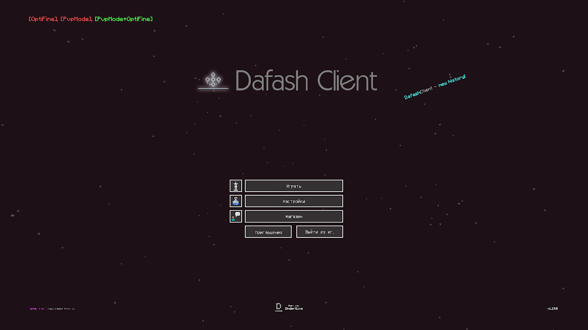
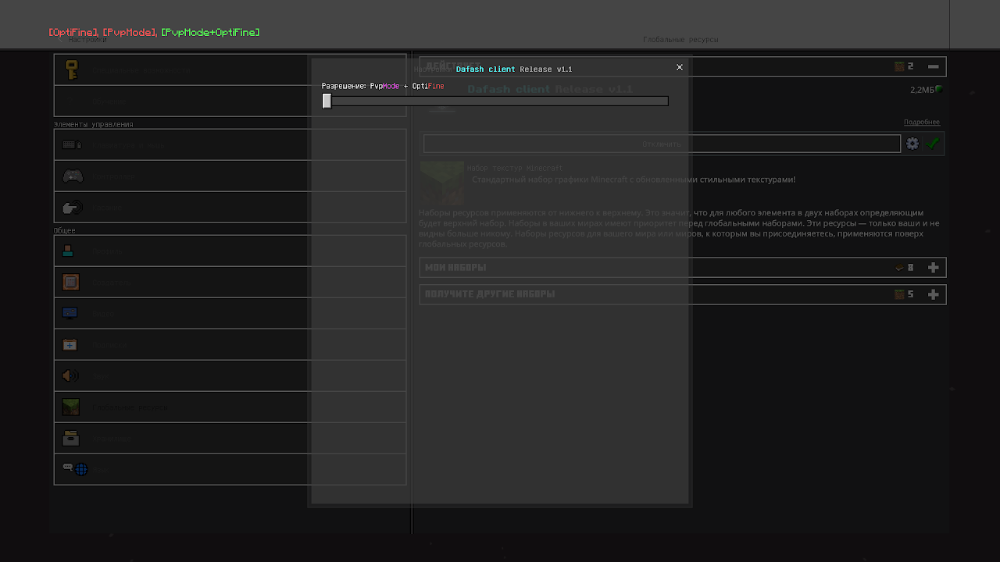
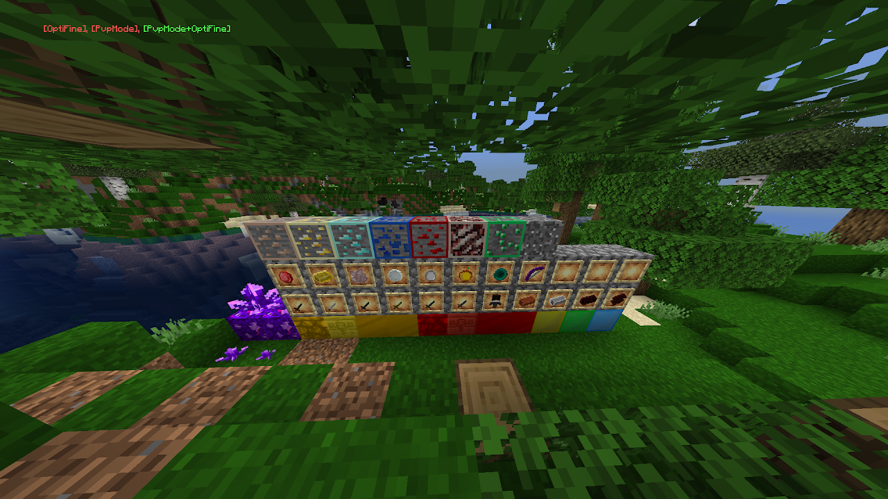

DAFASH CLIENT
Информация о клиенте
Dafash Client - Это клиент для Minecraft bedrock edition, он работает на всех платформах которые поддерживают этот Minecraft. В нём есть функция которая называется OptiFine. Она оптимизирует игру и даёт большее значение FPS за счёт упрощения воды и скриптов. Режим PvpMode - это режим который предназначен для того чтобы играть на PVP серверах, или на тех которые распространённые, например The Hive, CubeCraft ну и известные нам PVP сервера которые называются Ectary и Zeqa. PvpMode + OptiFine - вы наверное уже поняли что это, это соединение двух настроек то-есть игра станет оптимизированная и будет включена функция для PVP. В обычном режиме клиента, будет использованы Default клиентовские инструменты и некоторые нарисованные текстуры дизайнерами. Эти функции были добавлены с версий Release 1.0 и 1.1 так как 1.1 не вышла, всё звязанное с PvpMode пока что в версии 1.0 нет.
Обзор клиента:



Список страниц